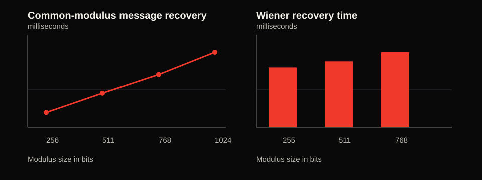

SC6104 CRYPTOGRAPHY COURSE PROJECT
Breaking
Weak RSA Keys
Two controlled attacks show why large moduli cannot compensate for faulty key generation.
Shared prime reuse
gcd(N₁, N₂) = pSmall private exponent
d < N^(1/4) / 3Threat model
The attacker receives public keys only
- Known to attackerRSA moduli N and public exponent e from a controlled local key set.
- Not attemptedNo generic factorization of a correctly generated 2048-bit RSA modulus.
- GoalRecover the private key only when an implementation makes a specific error.
Shared-prime attack
Faulty randomness can reuse one secret prime across two public moduli
N₁ = p × q₁same pN₂ = p × q₂same pgcd(N₁, N₂) = p
Knowing p gives q, φ(N), and then d
Live demonstration
The attack program sees only public parameters
- Generate four 2048-bit public keys
- Reuse one prime in exactly two keys
- Compute gcd for each public-key pair
- Reconstruct d and decrypt the message
gcd scan found 1 vulnerable pair Recovered plaintext: RSA keys need independent primes
Wiener's small-d attack
A private exponent chosen too small creates a continued-fraction shortcut
e × d − k × φ(N) = 1When d is small, k / d approximates e / N
continued fractions produce candidate values for d
We verify candidates by reconstructing p and q
Second live attack
A 2048-bit modulus still fails when d is intentionally tiny
N, ek / dd, p, qThe demo verifies the recovered d by decrypting a second message
Measured controlled experiments
Timings regenerate each run on locally generated vulnerable keys

Batch GCD scanning grows with the number of public keys. Wiener recovery exploits a parameter weakness rather than generic factorization.
Run python3 -m experiments.run_experiments to regenerate results.
Large RSA keys still need correct generation
- Use reviewed librariesAvoid custom key-generation code in production systems.
- Use a CSPRNGIndependent entropy prevents repeated primes across keys.
- Avoid manual d selectionRSA parameters require validated mathematical constraints.
Key length protects against generic factoring. It cannot repair flawed randomness or unsafe parameters.
PART TWO — CHOSEN-CIPHERTEXT ATTACK
Bleichenbacher's attack
A padding-oracle attack that recovers RSA PKCS#1 v1.5 plaintext without ever learning the private key.
(c · sᵉ)ᵈ mod n = m · s mod n
One oracle bit per query narrows the plaintext until only one value remains
Algorithm
Four steps repeat until the candidate interval collapses to a single value
- 1. BlindingFind s₀ so c·s₀ᵉ mod n is conforming → known-conforming m₀ ∈ [2B, 3B)
- 2. SearchingFind next sᵢ so c₀·sᵢᵉ mod n is conforming (2a / 2b / 2c)
- 3. NarrowingFor every valid r, intersect [(2B+rn)/sᵢ, (3B−1+rn)/sᵢ] with the current interval(s)
- 4. SolveInterval collapses to one point a → m = a·s₀⁻¹ mod n
Correctness
Every oracle "yes" is a real numeric constraint, never a guess
2B ≤ m₀·s mod n < 3B
Blinding guarantees m₀ ∈ [2B, 3B−1] to start
Step 3 tries every consistent r — the true m₀ always lands in a surviving interval
Intervals only shrink or get eliminated — never go empty if the math is right
Recover m = m₀·s₀⁻¹ mod n once the interval collapses to a point
Experiment results
Averages over repeated trials against locally generated vulnerable keys
| Key size | Avg. time | Avg. calls |
|---|---|---|
| 1024-bit | 23.2 s | 61,423 |
| 2048-bit | 144.5 s | 41,914 |
Full attack to recovery
| Key size | Avg. time | Avg. calls | Avg. iter. |
|---|---|---|---|
| 1024-bit | 118.7 s | 307,869 | 922 |
| 2048-bit | 138.1 s | 28,021 | 2,017 |
| 4096-bit | 1792.5 s | 61,505 | 4,065 |
Oracle-call count is dominated by the ~2⁻¹⁶ probability of a random block starting with 0x00 0x02 — fixed by the padding check, not the key size.
Iteration count scales with modulus size: each step 2c round removes roughly one bit from the candidate interval.
Beyond PKCS#1 v1.5
The attack only exploits RSA's group structure — it has no idea what encoding produced the ciphertext
- Raw / unpadded RSAAttackable — blinding finds a conforming entry point
- OAEP, same key as a PKCS#1 v1.5 oracleAttackable — recovers the raw OAEP block, needs a separate decode step afterward
- OAEP, no PKCS#1 v1.5 oracle existsNot attackable this way — needs a different attack (Manger's)
- LessonNever let one private key serve two padding schemes with different oracle strength
Takeaway
- FixUse OAEP; make padding failures indistinguishable from any other decryption failure
- AlternativeMove away from RSA entirely (e.g. ECDLP-based schemes) where this oracle class doesn't apply
- PrincipleNever expose a decryption path that leaks why something failed
RSA isn't broken. The error-handling side channel is — a fixable implementation choice, not a flaw in the math.
Contribution
Work completed on the Bleichenbacher attack implementation
- Oracle checkPKCS#1 v1.5 padding-validity check
- Step 1Blinding
- Step 2aInitial multiplier search
- Step 2bLinear search with multiple intervals
- Step 4Plaintext recovery and unblinding